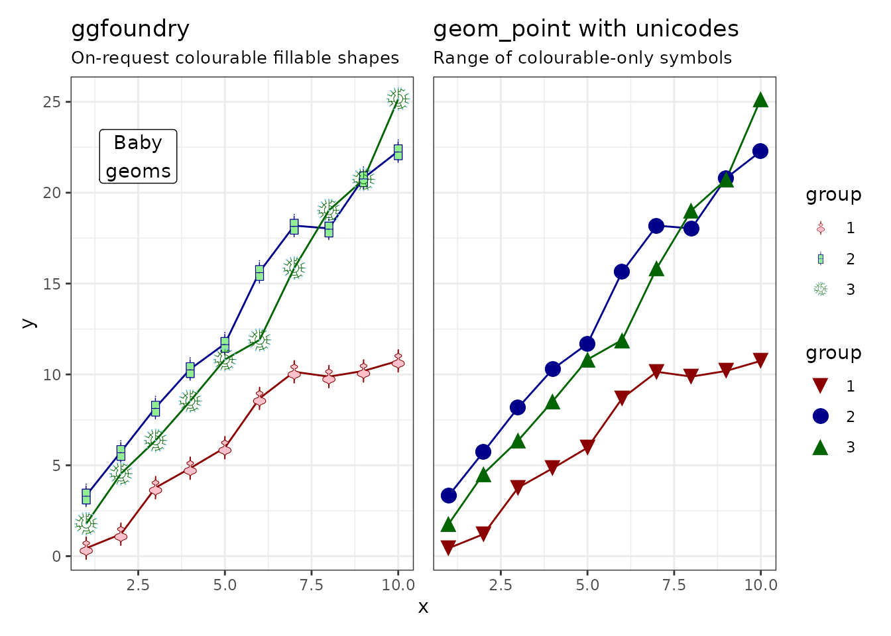
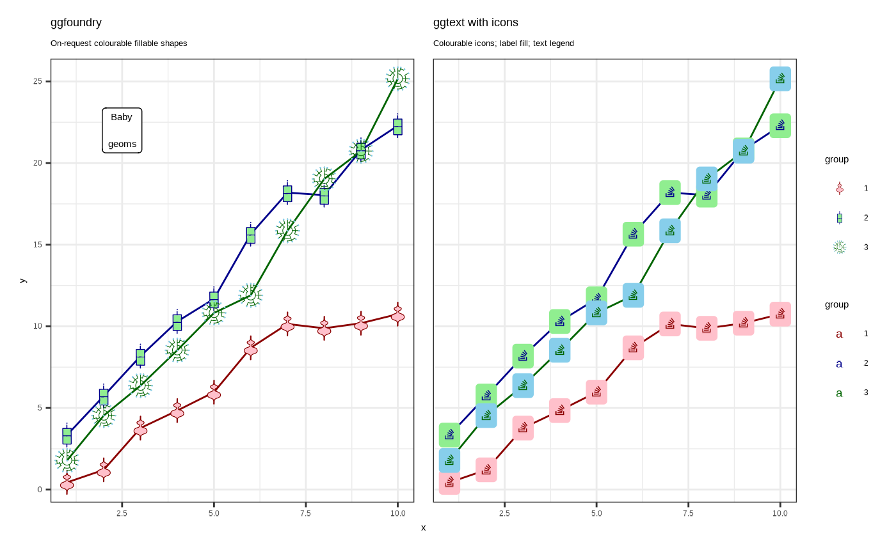
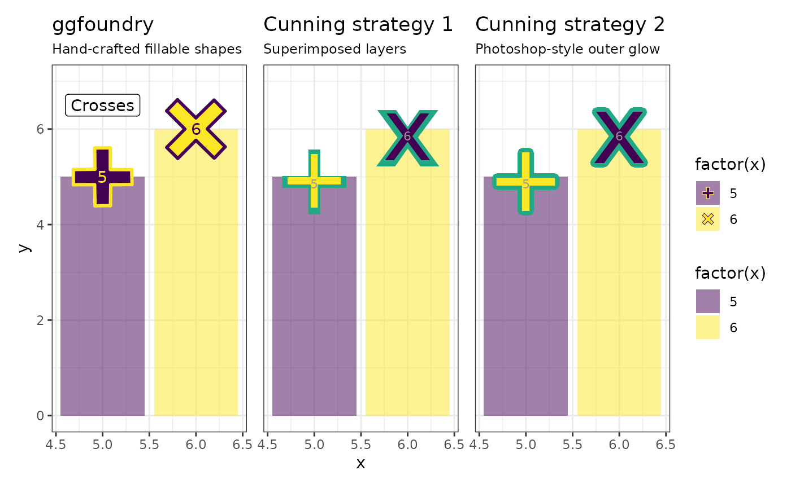

Motivation
ggfoundry was a little inspired by Stack Overflow posts seeking specific shapes. But, in truth, mostly by a personal interest in getting acquainted with grid graphics (the underpinnings of ggplot2).
Shape landscape
Yes, there is already a seemingly near-infinite number of shapes out there, the capabilities of which we’ll contrast in a moment:
- The shapes most familiar to users of ggplot (some fillable) are described here;
- Colourable unicodes and icons like fontawesome extend the options;
- And ggimage enables the use of whole pictures.
But sometimes you still can’t find the one you want! Or at least you can’t manipulate it in the way you’d like.
ggfoundry offers arbitrary hand-crafted colourable and fillable shapes for ggplot2.
New shapes may be feature requested via a Github issue.
Foundry process
These artisanal symbols begin life as hand-drawn vector images with
two layers: an outline and a fill. Each SVG pair is converted to Cairo
graphics format, forged at extreme temperatures into objects of class
“Picture”, and finally delicately cast as a gTree
representation of the original shape. But not quite back to where we
started, because they are now editable.
When cooled and finely burnished, the gTree and all its grob (grid
graphical object) children, may then be manipulated by
geom_casting() to render the desired ggplot with those
special high-end adornments.
Contrast with unicodes
The extensive range of unicodes is a great option. They are colourable and appear in the legend.
random_walk <- \(x, y, z) cumsum(rnorm(x, mean = y, sd = sqrt(z)))
set.seed(123)
df <- tibble(
x = rep(1:10, 3),
y = c(
random_walk(10, 1, 1),
random_walk(10, 2, 1.2),
random_walk(10, 3, 1.3)
),
group = factor(c(rep(1, 10), rep(2, 10), rep(3, 10)))
)
p <- df |>
ggplot(aes(x, y, shape = group, colour = group, fill = group)) +
geom_line(show.legend = FALSE) +
scale_colour_manual(values = c("darkred", "darkgreen", "darkblue")) +
scale_fill_manual(values = c("pink", "lightgreen", "skyblue")) +
theme_bw()
p1 <- p +
geom_casting(size = 0.15) +
annotate("label", x = 2.5, y = 22, label = "Baby\ngeoms") +
scale_shape_manual(values = c("violin", "box", "dendro")) +
labs(
title = "ggfoundry",
subtitle = "On-request colourable fillable shapes"
)
p2 <- p +
geom_point(size = 5) +
scale_shape_manual(values = c("\u058D", "\u23C0", "\u23F2")) +
labs(
title = "geom_point with unicodes",
subtitle = "Range of colourable-only symbols"
)
p1 + p2 + plot_layout(guides = "collect", axes = "collect")
Contrast with ggtext / icons
Icons are also a great option, e.g. for brands. One way to use these as ggplot points is via the showtext and ggtext packages. They too are colourable, but the fill is for the surrounding label rather than the symbol itself. The legend reflects the use of the richtext geom, i.e. shows letters.
library(showtext)
library(ggtext)
font_add("fa-solid", "Font_Awesome_6_Brands-Regular-400.otf")
showtext_auto()
p2 <- p +
geom_richtext(
aes(label = "<span style='font-family: \"fa-solid\"'></span>"),
size = 5, label.colour = NA,
) +
labs(
title = "ggtext with icons",
subtitle = paste0(
"Colourable icons; label fill; ",
"showtext alters patchwork font size; ",
"text legend"
)
)
p1 + p2 + plot_layout(guides = "collect", axes = "collect")
showtext_auto(enable = FALSE)Contrast with ggimage
ggimage is a great option for full images, e.g. png files. Country flags, company logos and sports team badges are good example use-cases, as rendering the full image as-is is often the desired outcome.
df <- tribble(
~x, ~y,
5, 5,
6, 6,
7, 7,
8, 8
)
p <- df |>
ggplot(aes(x, y, shape = factor(x), fill = factor(x))) +
geom_col() +
scale_fill_viridis_d() +
scale_y_continuous(limits = c(NA, 9)) +
theme_bw()
p1 <- p +
geom_casting(size = 0.3, aes(colour = factor(x))) +
geom_text(aes(label = x, colour = factor(x)), show.legend = FALSE) +
annotate("label", x = 5.5, y = 8, label = "Polygons") +
scale_shape_manual(values = c("pentagon", "hexagon", "heptagon", "octagon")) +
scale_colour_viridis_d(direction = -1) +
labs(
title = "ggfoundry",
subtitle = "Arbitrary hand-crafted fillable shapes"
)
p2 <- p +
geom_flag(size = 0.1, image = c("DE", "FR", "CA", "US")) +
labs(
title = "ggimage",
subtitle = "Any as-is whole picture, e.g. png"
)
p1 + p2 + plot_layout(guides = "collect", axes = "collect")Contrast with cunning strategies
Where existing symbols are not fillable, there are possible strategies to achieve a similar effect using only colour and compromising a little on the legend:
- Have one larger layer with a coloured symbol. Then superimpose a smaller second layer with a differently-coloured symbol.
- Use photoshop-style special effects provided by the ggfx package, e.g. adding a differently-coloured outer-glow.
library(ggfx)
df <- tribble(
~x, ~y, ~label,
5, 5, "+",
6, 6, "x"
)
p <- df |>
ggplot(aes(x, y, shape = factor(x), fill = factor(x))) +
geom_col(alpha = 0.5) +
scale_y_continuous(limits = c(NA, 7)) +
scale_fill_viridis_d() +
scale_colour_viridis_d(direction = -1) +
theme_bw()
p1 <- p +
geom_casting(size = 0.7, aes(colour = factor(x))) +
geom_text(aes(label = x, colour = factor(x)), show.legend = FALSE) +
annotate("label", x = 5.5, y = 8, label = "Crosses") +
scale_shape_manual(values = c("cross2", "cross1")) +
labs(
title = "ggfoundry",
subtitle = "Hand-crafted fillable shapes"
)
p2 <- p +
geom_text(aes(label = label), colour = "#22A884", fontface = "bold",
size = 24, show.legend = FALSE) +
geom_text(aes(label = label, colour = factor(x)),
size = 20, show.legend = FALSE) +
geom_text(aes(label = x), colour = "grey60", nudge_y = -0.15,
size = 3, show.legend = FALSE) +
labs(
title = "Cunning strategy 1",
subtitle = "Superimposed layers"
)
p3 <- p +
with_outer_glow(geom_text(aes(label = label, colour = factor(x)),
size = 22, show.legend = FALSE,
), sigma = 0, expand = 8, colour = "#22A884") +
geom_text(aes(label = x), colour = "grey60", nudge_y = -0.15,
size = 3, show.legend = FALSE) +
labs(
title = "Cunning strategy 2",
subtitle = "Photoshop-style outer glow"
)
p1 + p2 + p3 + plot_layout(guides = "collect", axes = "collect")
Available shapes
In summary, ggfoundry may be the destination of “last resort”!
After travelling the mountains, seas and forests of the world in search of that elusive shape (or small set), a hand-made grob may be the fillable “Holy Grail” sought via a Github issue.
These modest starter sets are included with the package. You can “mix and match” shapes from different sets; the set is purely for grouping shapes in the documentation.